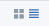
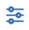
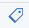

Managing releases
Release management is the process of managing, planning, scheduling and controlling a software build through different stages and environments; including testing and deploying software releases.
The Release page displays information about releases. This page provides access to the calendar, release and task details.
The left side of the page contains the calendar or list of tasks. Click Calendar to view the calendar. To view tasks, click Tasks. When viewing tasks you can select to view only your tasks or all tasks.
Release activities are displayed in a tile or list () format. You can use filters to limit the amount of information shown by typing a filter in the search bar. Additionally, click the filter icon () to limit the activity list to: complete, in progress, or scheduled. Click the release name to view details about the release.
Click the tag icon ( ) to toggle on and off the displaying of tags associated with the release activity.
To create a new release, click Create release.
You can also use this page to access and work with release templates by clicking Templates in the top right corner.
Click Archived to view and work with releases removed from the Releases page and the calendar.
Parent topic: Release management